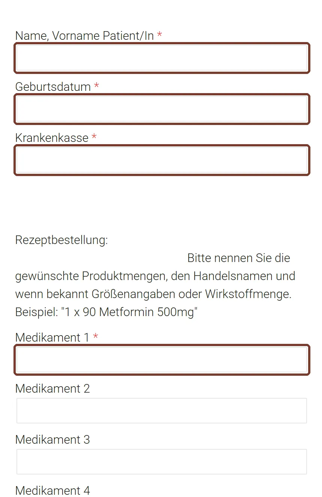
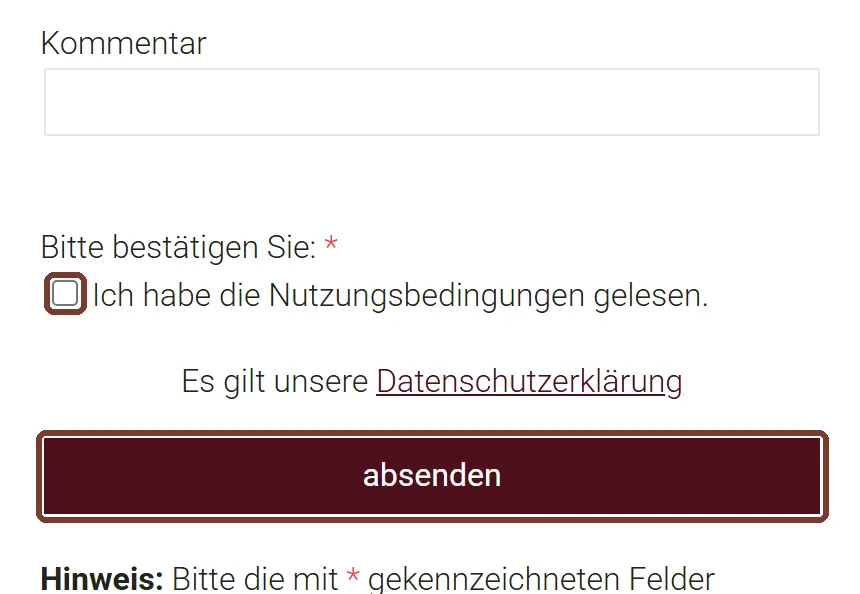
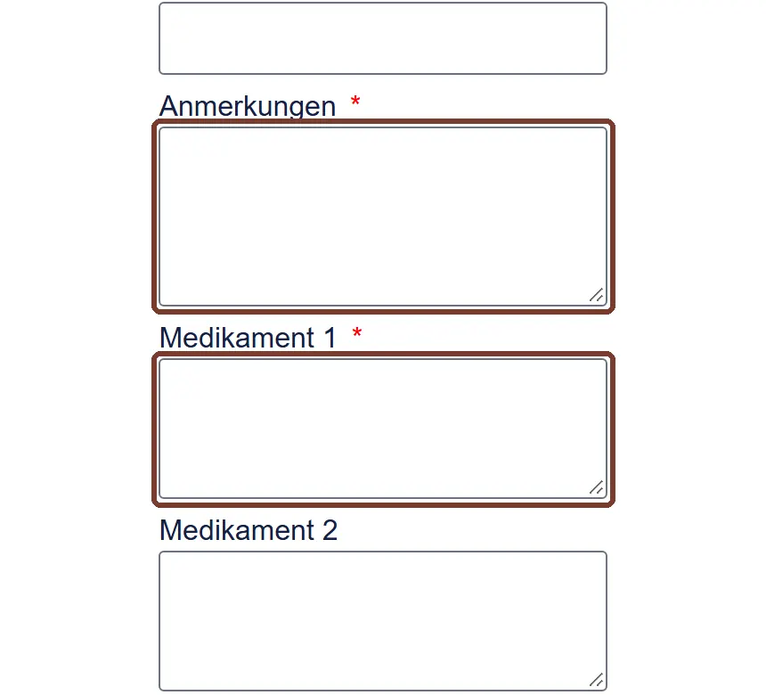
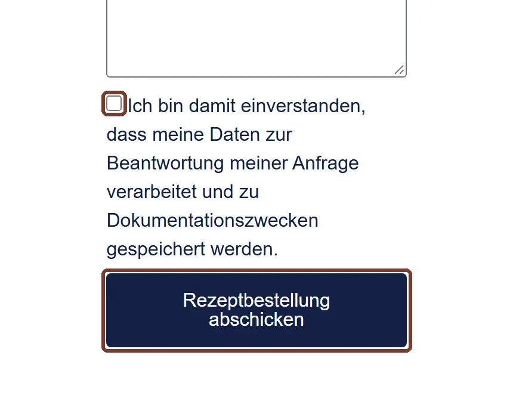

Rezept online bestellen
Das Formular ist für Dauermedikamente und Wiederholungsrezepte. Rezepte gibt es nur noch in Ausnahmefällen zur sofortigen Mitnahme.
Bitte wählen Sie oben, dann erscheint Ihre Anleitung.
Medikamente, die nicht auf Ihrem Medikamentenplan stehen, müssen erst mit den Ärzten besprochen werden. Bitte buchen Sie einen Termin.
Privat- und Hilfsmittelrezepte gibt es noch nicht als E-Rezept. Sie bestellen genauso, holen das Rezept aber am nächsten Werktag in der Praxis ab.
Erst ganz lesen. Der Knopf öffnet ein neues Fenster. Diese Anleitung bleibt offen.
Das brauchen Sie
Ihre Versichertenkarte muss in diesem Quartal einmal in der Praxis eingelesen worden sein. Sonst wird die Bestellung nicht bearbeitet. Halten Sie Ihren Medikamentenplan bereit.
Formular öffnen
Rezeptformular Wettringener Straße öffnen
Erscheint ein Hinweis zu Cookies, tippen Sie auf „Alle ablehnen“.
Felder ausfüllen
Tragen Sie Name, Geburtsdatum und Krankenkasse ein. Schreiben Sie dann Menge, Name und Stärke, zum Beispiel „1 x 90 Metformin 500mg“. Bis zu sechs Medikamente passen hinein.

Beispielansicht vom 02.11.2026, Markierung ergänzt Haken setzen und absenden
Setzen Sie den Haken bei den Nutzungsbedingungen und tippen Sie auf absenden.

Beispielansicht vom 02.11.2026, Markierung ergänzt Rezept abrufen
Ihr E-Rezept ist in der Regel am nächsten Werktag in der Apotheke Ihrer Wahl abrufbar. Stecken Sie dort Ihre Versichertenkarte ein oder nutzen Sie die E-Rezept-App.
Privat-, BTM-, Heil- und Hilfsmittelrezepte gibt es am Schilden nicht über das Formular. Sie müssen in der Praxis in Papierform abgeholt werden.
Erst ganz lesen. Der Knopf öffnet ein neues Fenster. Diese Anleitung bleibt offen.
Das brauchen Sie
Ihre Gesundheitskarte muss bei der ersten Bestellung im Quartal einmal in der Praxis eingelesen werden. Sie brauchen außerdem eine E-Mail-Adresse und eine Telefonnummer.
Formular öffnen
Felder ausfüllen
Pflicht sind Anrede, Name, Geburtsdatum, E-Mail und Telefonnummer. Auch Anmerkungen ist ein Pflichtfeld: Haben Sie keine, schreiben Sie „keine“. Tragen Sie dann unter Medikament 1 Ihr Medikament ein.

Beispielansicht vom 02.11.2026, Markierung ergänzt Haken setzen und abschicken
Setzen Sie den Haken und tippen Sie auf Rezeptbestellung abschicken.

Beispielansicht vom 02.11.2026, Markierung ergänzt Rezept abrufen
Die Praxis braucht bis zu 24 Stunden. Danach gehen Sie zur Apotheke Ihrer Wahl, ein Papierrezept entfällt.